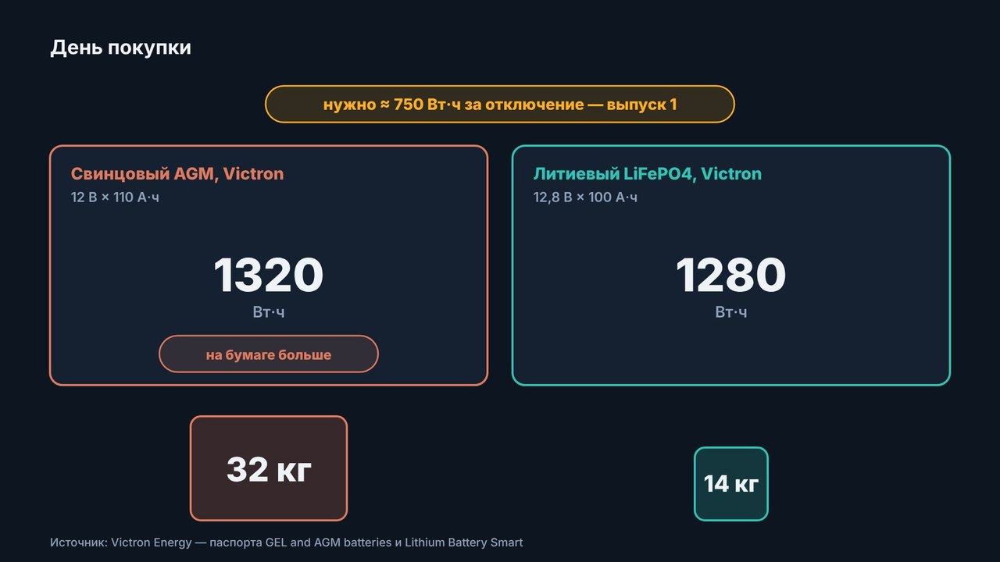
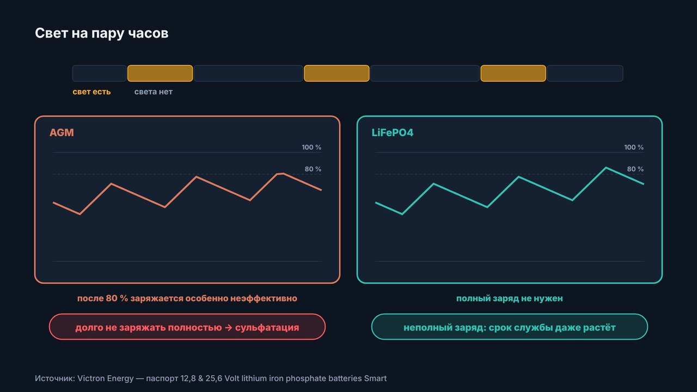
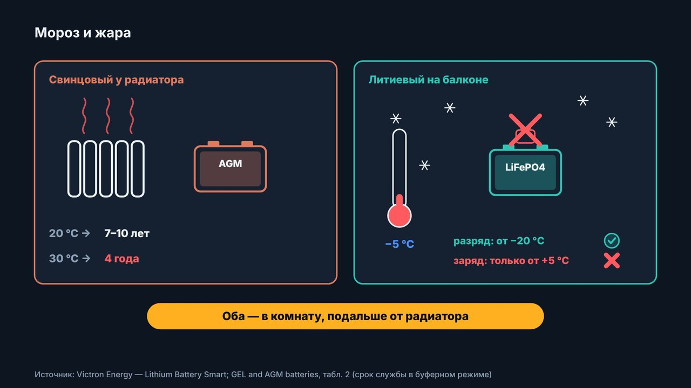

AGM чи LiFePO4: який акумулятор для інвертора вигідніший за 10 років
Дві сусідні квартири в один день купують акумулятор на одне й те саме відключення: ліворуч свинцевий AGM, праворуч літієвий LiFePO4. Сусіди вигадані, цифри — з паспортів Victron. Дивимося, що з ними відбувається рік за роком, і рахуємо, хто заплатить менше.
Ролик російською, 5:05. Не відкривається? Дивитися на YouTube або читайте розбір нижче — у ньому все те саме.
Впишіть, скільки у вас відключень на рік і скільки ват-годин іде за одне, і ціни зі свого магазину — калькулятор покаже, на скільки років вистачить кожного акумулятора і що вигідніше за 10 років.
Відкрити калькуляторДень покупки
Обом потрібно близько 750 Вт·год на одне відключення — так ми порахували в випуску 1. Ліворуч — AGM Victron 12 В × 110 А·год, це 1320 Вт·год і 32 кг. Праворуч — LiFePO4 Victron 12,8 В × 100 А·год: 1280 Вт·год і 14 кг. На папері свинцевий навіть більший.

1Цикли за паспортом
Кожне відключення забирає більше половини ємності в обох: 57 % в AGM і 59 % у LiFePO4. Скільки таких циклів витримає акумулятор, написано в паспорті. AGM Victron: 600 циклів при розряді на 50 %, 400 — при 80 %, 1500 — при 30 %. LiFePO4 Victron: 2500 циклів при 80 %, 3000 — при 70 %, 5000 — при 50 %, до залишкової ємності 80 %. У випуску 1 ми називали для AGM 250 циклів при 80 % — за книгою Victron 2011 року; в актуальному паспорті — 400.

2Світло на пару годин
Коли світло дають ненадовго, свинцевий не встигає зарядитися повністю. Victron пише, що після приблизно 80 % заряду свинцевий заряджається особливо неефективно, а якщо його довго не заряджати повністю, він передчасно виходить з ладу через сульфатацію. Літієвому повний заряд не потрібен — за даними Victron, при неповному заряді його строк служби навіть трохи зростає.

3Мороз і спека
Літієвий Victron віддає енергію від −20 °C, а заряджається тільки від +5 °C: на морозному балконі система захисту не дасть йому зарядитися. Свинцевий не любить спеки: розрахунковий строк служби AGM Victron у буферному режимі — 7–10 років при 20 °C, 4 роки при 30 °C і 2 роки при 40 °C. Обидва — у кімнату, подалі від радіатора.

4Рік за роком
Припустімо, відключень 150 на рік — це 150 циклів. AGM при розряді на 57 % витримує близько 555 циклів (між 600 і 400 за паспортом) — це приблизно 3,7 року, за 10 років доведеться купити три акумулятори. LiFePO4 за 10 років проходить 1500 циклів — половину з 3000 за паспортом.

Втрати на заряджання
За даними Victron, середній свинцевий акумулятор повертає близько 80 % енергії, яку в нього зарядили, літієвий — 92 %. Щоб повернути 750 Вт·год, AGM візьме з розетки близько 938 Вт·год, LiFePO4 — близько 815 Вт·год. Різниця ≈ 120 Вт·год на кожне заряджання, за 1500 циклів — близько 180 кВт·год.
5Гроші — без цін
У прикладі — три AGM проти одного LiFePO4: літієвий вигідніший, якщо дорожчий за AGM менш ніж утричі. Точніше порівнювати ціну за кіловат-годину: ціну акумулятора ділимо на всю енергію, яку він віддасть за життя. При рідких відключеннях цикли майже не витрачаються, і вирішують роки: AGM розрахований на 7–10 років при 20 °C. При частих — цикли у свинцевого закінчаться раніше, ніж роки.

Чек-лист
- Скільки відключень на рік і скільки Вт·год іде за одне.
- Кількість циклів у паспорті — при вашій глибині розряду.
- Цикли ÷ відключення на рік = на скільки років вистачить; в AGM не більше розрахункового строку служби.
- Кількість покупок за 10 років × ціна.
- LiFePO4 — не на мороз, AGM — не в спеку.
Джерела
- Victron Energy (Нідерланди) — паспорт 12,8 & 25,6 Volt lithium iron phosphate batteries Smart: 1280 Вт·год, 14 кг, цикли 2500/3000/5000 при 80/70/50 %, заряд від +5 °C, розряд від −20 °C, ККД циклу 92 % проти 80 % у свинцевого, сульфатація, неповний заряд.
- Victron Energy — Lithium Battery Smart, технічні дані.
- Victron Energy — паспорт GEL and AGM batteries: AGM 12 В 110 А·год — 32 кг; цикли 400/600/1500 при 80/50/30 %; строк 7–10 / 4 / 2 роки при 20 / 30 / 40 °C.
Перевірено 15 листопада 2026 р. Знайшли помилку — напишіть у коментарях під роликом.